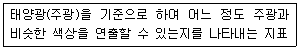
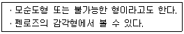
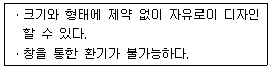
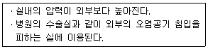
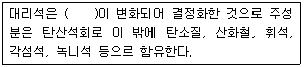
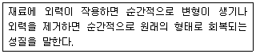
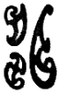
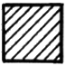

실내건축기능사 (2015-04-04 기출문제)
1과목: 실내디자인
1. 거실의 가구 배치 방법 중 가구를 두 벽면에 연결시켜 배치하는 형식으로 시선이 마주치지 않아 안정감이 있는 것은?
- 직선형
- 대면형
- ㄱ자형
- ㄷ자형
(정답률: 84%)

2. 다음 중 측면판매형식의 적용이 가장 곤란한 상품은?
- 서적
- 침구
- 서재
- 부엌
(정답률: 58%)
3. 주거공간은 주 행동에 의해 개인공간, 사회공간, 가사노동공간 등으로 구분할 수 있다. 다음 중 사회공간에 속하는 것은?(오류 신고가 접수된 문제입니다. 반드시 정답과 해설을 확인하시기 바랍니다.)
- 식당
- 침실
- 천장
- 지붕
(정답률: 94%)
4. 실내공간을 형성하는 기본구성요소 중 다른 요소들에 비해 시대와 양식에 의한 변화가 거의 없는 것은?
- 벽
- 바닥
- 천장
- 지붕
(정답률: 76%)
5. 다음 설명에 알맞은 조명 관련 용어는?

- 광도
- 휘도
- 조명률
- 연색성
(정답률: 52%)
6. 다음 중 식탁 밑에 부분 카펫이나 러그를 깔았을 경우 얻을 수 있는 효과와 가장 거리가 먼 것은?
- 소음 방지
- 공간 확대
- 영역 구분
- 바닥 긁힘 방지
(정답률: 88%)
7. 동선계획을 가장 잘 나타낼 수 있는 실내계획은?
- 입면계획
- 천장계획
- 구조계획
- 평면계획
(정답률: 82%)
8. 상점에서 쇼윈도, 출입구 및 홀의 입구부분을 포함한 평면적인 구성요소와 아케이드, 광고판, 사인, 외부장치를 포함한 입체적인 구성요소의 총체를 의미하는 것은?
- 파사드
- 스크린
- AIDMA
- 디스플레이
(정답률: 65%)
9. 다음의 건축화조명방식 중 벽면조명에 속하지 않는 것은?
- 커튼 조명
- 코퍼 조명
- 코니스 조명
- 밸런스 조명
(정답률: 52%)
10. 인간의 주의력에 의해 감지되는 시각적 무게의 평형상태를 의미하는 디자인 원리는?
- 리듬
- 통일
- 균형
- 강조
(정답률: 80%)
11. 부엌의 작업순서에 따른 작업대의 배치 순서로 가장 알맞은 것은?
- 가열대 → 배선대 → 준비대 → 조리대 → 개수대
- 개수대 → 준비대 → 조리대 → 배선대 → 가열대
- 배선대 → 가열대 → 준비대 → 개수대 → 조리대
- 준비대 → 개수대 → 조리대 → 가열대 → 배선대
(정답률: 86%)
12. 약동감, 생동감 넘치는 에너지와 운동감, 속도감을 주는 선의 종류는?
- 곡선
- 사선
- 수직선
- 수평선
(정답률: 70%)
13. 다음 설명에 알맞은 착시의 유형은?

- 운동의 착시
- 길이의 착시
- 역리도형 착시
- 다의도형 착시
(정답률: 82%)
14. 붙박이 가구(built in furniture)에 관한 설명으로 옳지 않은 것은?
- 공간의 효율성을 높일 수 있다.
- 건축물과 일체화하여 설치하는 가구이다.
- 필요에 따라 설치 장소를 자유롭게 움직일 수 있다.
- 설치 시 실내 마감재와의 조화 등을 고려하여야 한다.
(정답률: 90%)
15. 다음 설명에 알맞은 창의 종류는?

- 고정창
- 미닫이창
- 여닫이창
- 오르내리창
(정답률: 93%)
16. 차음성이 높은 재료의 특징과 가장 거리가 먼 것은?
- 무겁다.
- 단단하다
- 치밀하다.
- 다공질이다.
(정답률: 62%)
17. 공기가 포화상태(습도 100%)가 될 때의 온도를 그 공기의 무엇이라 하는가?
- 절대운도
- 습구온도
- 건구온도
- 노점온도
(정답률: 56%)
18. 다음 설명에 알맞은 환기방식은?

- 자연환기방식
- 제1종 환기방식(병용식)
- 제2종 환기방식(압입식)
- 제3종 환기방식(흡출식)
(정답률: 62%)
19. 조도의 정의로 가장 알맞은 것은?
- 면의 단위면적에서 발산하는 광속
- 수조면의 단위면적에 입사하는 광속
- 복사로서 전파하는 에너지의 시간적 비율
- 점광원으로부터의 단위입체각당의 발산 광속
(정답률: 39%)
20. 다음 중 유효온도에서 고려하지 않는 것은?
- 기온
- 습도
- 기류
- 복사열
(정답률: 69%)
2과목: 실내환경
21. 다음 중 구리(Cu)를 포함하고 있지 않는 것은?
- 청동
- 양은
- 포금
- 합석판
(정답률: 58%)
22. 다음 ( )안에 알맞은 석재는?

- 석회석
- 감람석
- 응회암
- 점판암
(정답률: 72%)
23. 경화 콘크리트의 성질 중 하중이 지속하여 재하될 경우 변형이 시간과 더불어 증대하는 현상을 의미하는 용어는?
- 크리프
- 블리딩
- 레이턴스
- 건조수축
(정답률: 57%)
24. 파티클보드에 관한 설명으로 옳지 않은 것은?
- 면내 강성이 우수하다.
- 음 및 열의 차단성이 우수하다.
- 넓은 면적의 판상 제품을 만들 수 있다.
- 수분이나 고습도에 대한 저항 성능이 우수하다.
(정답률: 67%)
25. 다음의 점포 제품 중 흡수율 기준이 가장 낮은 것은?
- 자기질 타일
- 석기질 타일
- 도기질 타일
- 클링커 타일
(정답률: 64%)
26. 석고 플라스터 미장재료에 관한 설명으로 옳지 않은 것은?
- 내화성이 우수하다.
- 수경정 미장재료이다.
- 회반죽보다 건조 수축이 크다.
- 원칙적으로 해초 또는 풀즙을 사용하지 않는다.
(정답률: 48%)
27. 다음 중 내알칼리성이 가장 우수한 도료는?
- 에폭시도료
- 유성페인트
- 유성바니시
- 프탈산수지에나멜
(정답률: 60%)
28. 천연아스팔트에 속하지 않는 것은?
- 록 아스팔트
- 아스팔타이트
- 블론 아스팔트
- 레이크 아스팔트
(정답률: 71%)
29. 다음 설명에 알맞은 재료의 역학적 성질은?

- 소성
- 점성
- 탄성
- 인성
(정답률: 88%)
30. 다음 중 콘크리트의 시공연도(Workability)에 영향을 주는 요소와 가장 거리가 먼 것은?
- 혼화재료
- 물의 염도
- 단위시멘트량
- 골재의 입도
(정답률: 55%)
3과목: 실내건축재료
31. 다음 중 굳지 않은 콘크리트의 컨시스턴시(consistency)를 측정하는 방법으로 가장 알맞은 것은?
- 슬럼프 시험
- 블레인 시험
- 체가름 시험
- 오토클레이브 팽창도 시험
(정답률: 66%)
32. 시멘트가 경화될 때 용적이 팽창되는 정도를 의미하는 용어는?
- 응결
- 풍화
- 중성화
- 안정성
(정답률: 55%)
33. 금속의 부식과 방식에 관한 설명으로 옳은 것은?
- 산성이 강한 흙 속에서는 대부분의 금속 재료는 부식된다.
- 모르타르로 강재를 피복한 경우, 피복하지 않은 경우보다 부식의 우려가 크다.
- 다른 종류의 금속을 서로 잇대어 사용하는 경우 전기 작용에 의해 금속의 부식이 방지된다.
- 경수는 연수에 비하여 부식성이 크며, 오수에서 발생하는 이산화탄소, 메탄가스는 금속 부식을 완화시키는 완화제 역할을 한다.
(정답률: 58%)
34. 다음의 유리제품 중 부드럽고 균일한 확산광이 가능하며 확산에 의한 채광효과를 얻을 수 있는 것은?
- 강화유리
- 유리블록
- 반사유리
- 망입유리
(정답률: 48%)
35. 선축 재료를 화학조성에 따라 분류할 경우, 무기재료에 속하지 않는 것은?
- 흙
- 목재
- 석재
- 알루미늄
(정답률: 47%)
36. 플라스틱 건설재료의 일반적인 성질에 관한 설명으로 옳지 않은 것은?
- 전기절연성이 상당히 양호하다.
- 내수성 및 내투습성은 폴리초산비닐 등 일부를 제외하고는 극히 양호하다.
- 상호간 계면접착은 잘되나, 금속, 콘크리트, 목재, 유리 등 다른 재료에는 잘 부착되지 않는다.
- 일반적으로 투명 또는 백색의 물질이므로 적합한 안료나 염료를 첨가함에 따라 다양한 채색이 가능하다.
(정답률: 63%)
37. 보통포틀랜드시멘트보다 CS나 석고가 많고, 더욱이 분말도를 크게 하여 초기에 고강도를 발생하게 하는 시멘트는?
- 저열포틀랜드시멘트
- 조강포틀랜드시멘트
- 백색포틀랜드시멘트
- 중용열포틀랜드시멘트
(정답률: 71%)
38. 석재의 강도 중 일반적으로 가장 큰 것은?
- 휨강도
- 인장강도
- 전단강도
- 압축강도
(정답률: 73%)
39. 내열성ㆍ내한성이 우수한 수지로 -60 ~ 260℃의 범위에서 안정하고 탄성을 가지며 내후성 및 내화학성이 우수한 것은?
- 요소수지
- 아크릴수지
- 실리콘수지
- 멜라민수지
(정답률: 64%)
40. 목재의 강도 중 응력방향이 섬유방향에 평행한 경우 일반적으로 가장 작은 값을 갖는 것은?
- 휨강도
- 압축강도
- 인장강도
- 전단강도
(정답률: 41%)
41. 2층 마루틀 중 보를 쓰지 않고 장선을 사용하여 마루널을 깐 것은?
- 홑마루틀
- 보마루틀
- 짠마루틀
- 납작마루틀
(정답률: 52%)
42. 트레이싱지에 대한 설명 중 옳은 것은?
- 불투명한 제도용지이다.
- 연질이어서 쉽게 찢어진다.
- 습기에 약하다.
- 오래 보관되어야 할 도면의 제도에 쓰인다.
(정답률: 46%)
43. 다음 각 도면에 관한 설명으로 틀린 것은?
- 평면도에서는 실의 배치와 넓이, 개구부의 위치나 크기를 표시한다.
- 천장 평면도는 절단하지 않고 단순히 건물을 위에서 내려다 본 도면이다.
- 단면도는 건물을 수직으로 절단한 수, 그 앞면을 제거하고 건물을 수평방향으로 본 도면이다.
- 입면도는 건물의 외형을 각 면에 대하여 직각으로 투사한 도면이다.
(정답률: 60%)
44. 철골공사의 가공작업 순서로 옳은 것은?
- 원척도 - 본뜨기 - 금긋기 - 절단 - 구멍뚫기 - 가조립
- 원척도 - 금긋기 - 본뜨기 - 구멍뚫기 - 절단 - 가조립
- 원척도 - 절단 - 금긋기 - 본뜨기 - 구멍뚫기 - 가조립
- 원척도 - 구멍뚫기 - 금긋기 - 절단 - 본뜨기 - 가조립
(정답률: 50%)
45. 제도용구 중 치수를 옮기거나 선과 원주를 같은 길이로 나눌 때 사용하는 것은?
- 컴퍼스
- 디바이더
- 삼각스케일
- 운형자
(정답률: 74%)
46. 물체가 있는 것으로 가상되는 부분을 표현할 때 사용되는 선은?
- 가는 실선
- 파선
- 일점쇄선
- 이점쇄선
(정답률: 52%)
47. 건축도면의 치수에 대한 설명으로 틀린 것은?
- 치수는 특별히 명시하지 않는 한 마무리 치수로 표시한다.
- 치수 기입은 치수성 중앙 윗부분에 기입하는 것이 원칙이다.
- 치수선의 양 끝 표시는 화살 또는 점으로 표시할 수 있으며, 같은 도면에서 2종을 혼용할 수 있다.
- 협소한 간격이 연속될 때에는 인출선을 사용하여 치수를 쓴다.
(정답률: 78%)
48. 용착금속이 끝부분에서 모재와 융합하지 않고 덮여진 부분이 있는 용접결함을 무엇이라 하는가?
- 언더컷(under cut)
- 오버랩(over lap)
- 크랙(crack)
- 클리어런스(clearance)
(정답률: 58%)
49. 건축제도에서 다음 평면 표시 기호가 의미하는 것은?
- 미닫이문
- 주름문
- 접이문
- 연속문
(정답률: 64%)
50. 목구조에서 본 기둥 사이에 벽을 이루는 것으로서, 가새의 옆휨으르 막는데 유효한 기둥은?
- 평기둥
- 샛기둥
- 동자기둥
- 통재기둥
(정답률: 66%)
4과목: 건축일반
51. 기본 벽돌에서 칠오토막의 크기로 옳은 것은?
- 벽돌 한 장 길이의 1/2 토막
- 벽돌 한 장 길이의 직각 1/2 반절
- 벽돌 한 장 길이의 3/4 토막
- 벽돌 한 장 길이의 1/4 토막
(정답률: 65%)
52. 장선 슬래브의 장선을 직교시켜 구성한 우물반자 형태로 된 2방향 장선 슬래브 구조는?
- 1방향 슬래브
- 데크플레이트
- 플랫 슬래브
- 워플 슬래브
(정답률: 32%)
53. 플랫 슬래브(flat slab)구조에 관한 설명 중 틀린 것은?
- 내부에는 보가 없이 바닥판을 기둥이 직접 지지하는 슬래브를 말한다.
- 실내공간의 이용도가 좋다.
- 층높이를 낮게 할 수 있다.
- 고정하중이 적고 뼈대강성이 우수하다.
(정답률: 44%)
54. 건축 구조의 분류에서 일체식 구조로만 구성된 것은?
- 돌 구조 - 목 구조
- 철근 콘크리트 구조 - 철골 철근 콘크리트 구조
- 목 구조 - 철골 구조
- 철골 구조 - 벽돌 구조
(정답률: 63%)
55. 다음 그림과 같은 제도용구의 명칭으로 옳은 것은?

- 자유곡선자
- 운형자
- 템플릿
- 디바이더
(정답률: 63%)
56. 건축설계도 중 계획설계도에 해당하지 않는 것은?
- 구상도
- 조직도
- 동선도
- 배치도
(정답률: 40%)
57. 그림과 같은 단면용 재료 표시 기호가 의미하는 것은?

- 목재(치장재)
- 석재
- 인조석
- 지반
(정답률: 73%)
58. 도로 포장용 벽돌로서 주로 인도에 많이 쓰이는 것은?
- 이형벽돌
- 포도용 벽돌
- 오지벽돌
- 내화벽돌
(정답률: 66%)
59. 벽돌 쌓기 중 벽돌면에 구멍을 내어 쌓는 방식으로 방막벽이며 장식적인 효과가 우수한 쌓기 방식은?
- 엇모쌓기
- 영롱쌓기
- 영식쌓기
- 무늬쌓기
(정답률: 56%)
60. T자를 사용하여 그을 수 있는 선은?
- 포물선
- 수평선
- 사선
- 곡선
(정답률: 76%)